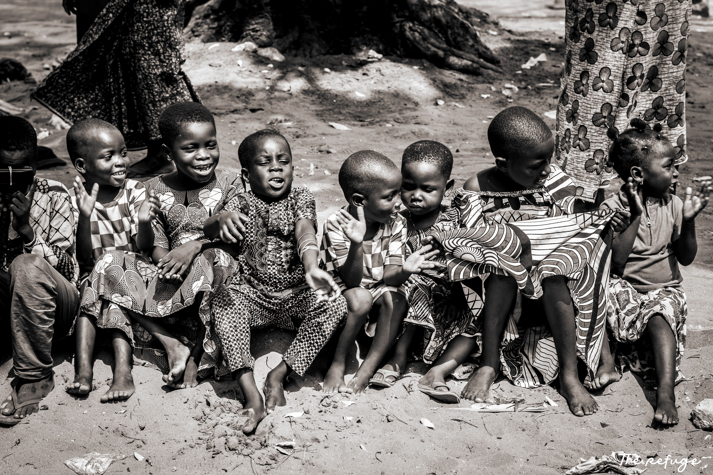
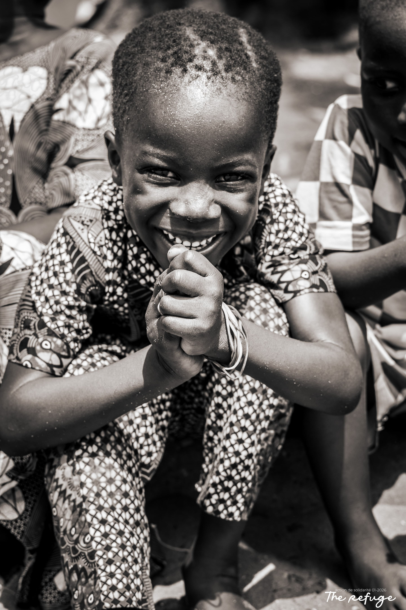
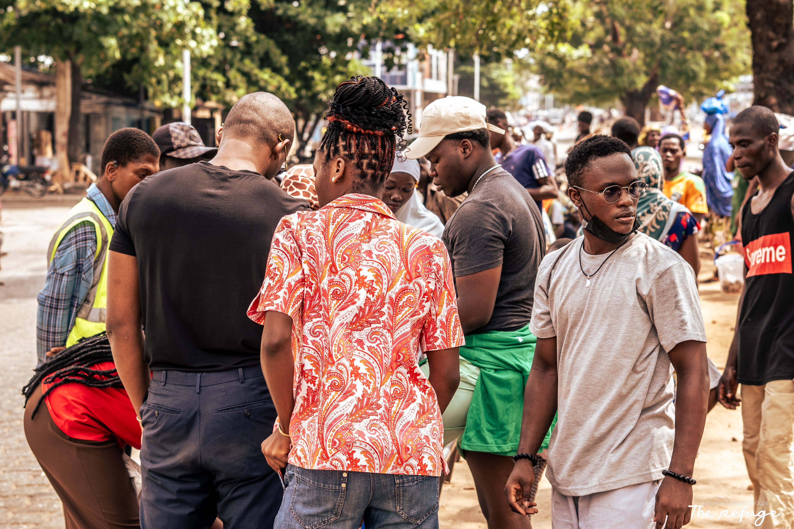
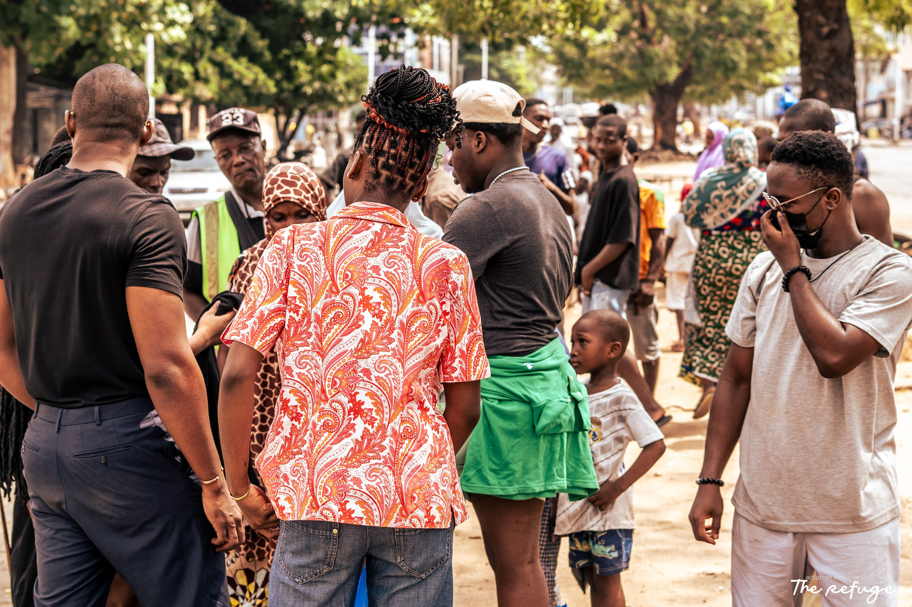
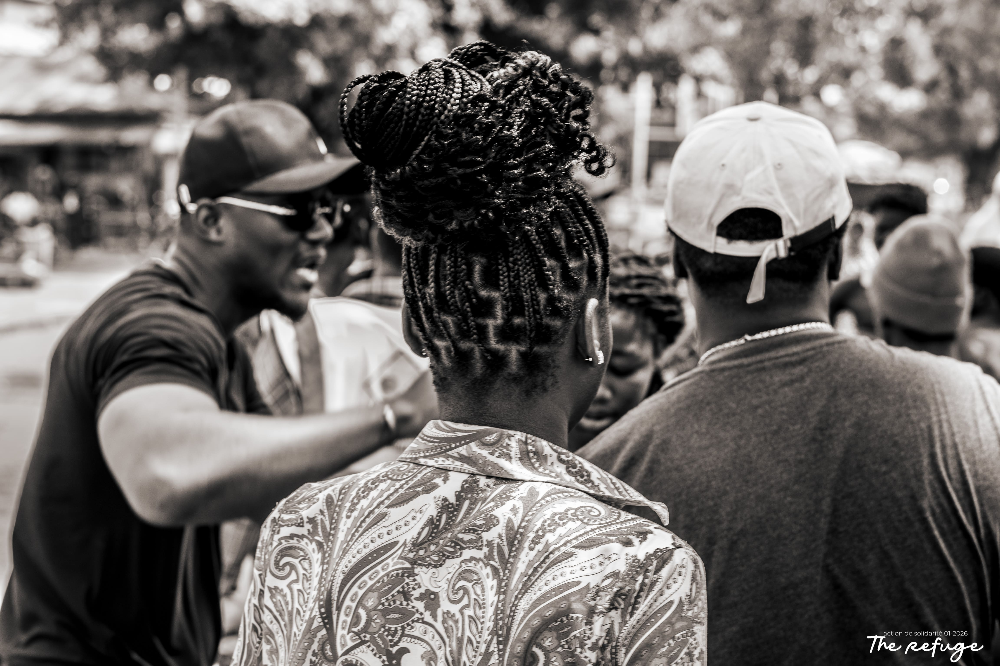

RÉCIT
La nuit où Marie a frappé à notre porte
Retour sur le parcours d'une mère sans abri et comment une tenue propre et chaude a ouvert le chemin de la réinsertion.
Lire la suite →

Nous sommes une organisation chrétienne humanitaire dédiée à apporter une aide matérielle, un accompagnement spirituel et de la dignité aux personnes les plus vulnérables à Cotonou.


À PROPOS DE THE REFUGE
The Refuge est une organisation à but non lucratif engagée à créer un impact durable à Cotonou en reliant la compassion à des actions de terrain concrètes, fidèles et quotidiennes.

NOS ACTIONS TERRAIN
Nous sommes une organisation à but non lucratif engagée à créer un impact durable en soutenant les communautés de Cotonou.

Offrir des tenues propres, adaptées et de quoi se vêtir dignement pour restaurer l'estime de soi des sans-abri de Cotonou...

Restaurer l'estime de soi, briser l'isolement de la rue et offrir une écoute attentive basée sur l'amour fraternel...

Accompagner individuellement vers l'emploi et l'indépendance pour sortir durablement de la précarité urbaine...
COMMENT PARTICIPER
Créer un changement significatif est un effort partagé. Que ce soit par votre temps, vos compétences ou votre soutien financier.
Votre don soutient directement les programmes de The Refuge, aidant à fournir des vêtements, des soins de santé, de l'éducation et une assistance d'urgence.
Rejoignez notre équipe de bénévoles dévoués pour faire une différence dans votre communauté grâce à un soutien pratique.
En parrainant un frère, vous pouvez l'aider à obtenir les ressources dont il a besoin pour s'épanouir et réussir sa réinsertion.
Offrez des vêtements propres, des matelas, des kits de dignité ou du matériel d'hygiène.
Faites connaître les réalités de la rue à Cotonou et devenez un porte-voix pour la cause.
Églises, entreprises, ONG : co-créons des projets d'insertion pour un impact durable.
TÉMOIGNAGES
Créer un changement significatif est un effort partagé. Que ce soit par votre temps, vos compétences ou votre soutien financier.
J'ai trouvé une vraie famille, des cœurs restaurés et un sens profond donné à ma foi sur le terrain.
Ils m'ont donné bien plus que des tenues propres : ils m'ont offert de l'écoute, de l'espoir et du respect.
The Refuge incarne pleinement l'évangile en action. Leur dévouement quotidien est exemplaire.
RÉCITS DU TERRAIN
RÉCIT
Retour sur le parcours d'une mère sans abri et comment une tenue propre et chaude a ouvert le chemin de la réinsertion.
Lire la suite →
IMPACT
Compte-rendu de notre dernière maraude dans le quartier de Jonquet. Une mobilisation exceptionnelle de nos jeunes bénévoles.
Lire la suite →
RÉFLEXION
Une méditation sur l'appel du Christ à agir concrètement face à la précarité urbaine, au-delà des mots et des discours.
Lire la suite →FOIRE AUX QUESTIONS
Trouvez des réponses rapides sur le fonctionnement de l'association, la transparence de vos dons et l'aide sur le terrain.
Nous contacter →Chaque don est alloué en priorité à l'achat de vêtements, de produits d'hygiène et de kits de dignité pour les maraudes. Une part minime est consacrée à la logistique de distribution. Nous garantissons une transparence financière totale avec des rapports annuels publiés sur notre page Impact.
Oui, absolument ! Nous accueillons avec joie les bénévoles pour nos maraudes du weekend ou nos ateliers d'écoute. Vous pouvez remplir le formulaire d'intérêt sur la page "Participer", et un membre de l'équipe vous contactera pour une session d'accueil.
Oui, The Refuge est une organisation à but non lucratif officiellement enregistrée auprès des autorités de la République du Bénin. Nous travaillons en collaboration avec les représentants locaux et d'autres églises partenaires à Cotonou.
Nos équipes parcourent les rues de Cotonou lors des maraudes hebdomadaires. Nous accueillons également les personnes en situation de précarité lors de nos points d'accueil physiques pour des tenues, du soutien ou une écoute fraternelle sans aucune distinction.
Vous pouvez nous écrire via notre formulaire sur la page "Participer" (onglet Partenariat) ou nous envoyer directement un e-mail à l'adresse contact@therefugebj.org. Nous serons ravis de discuter d'un cadre de collaboration adapté à votre vision.